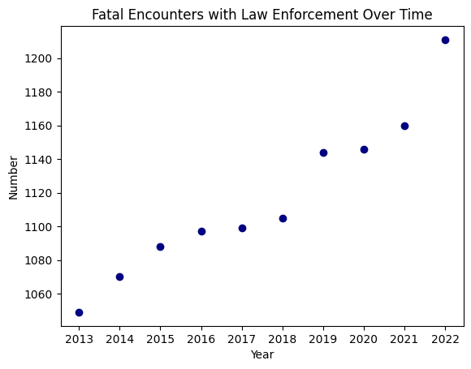
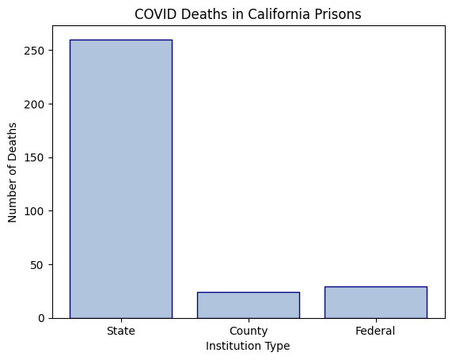
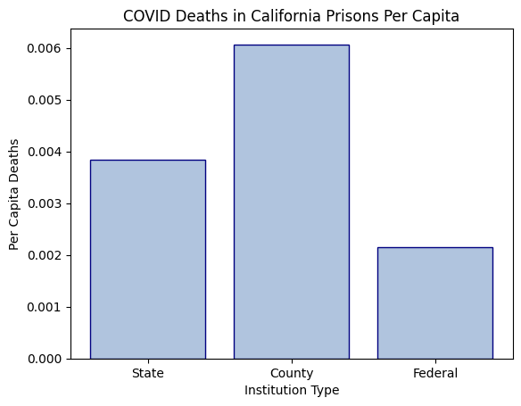
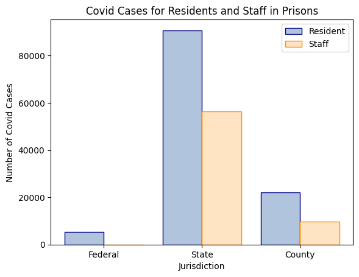

Code
# importing packages
import pandas as pd
import geopandas as gpd
import contextily as ctx
import matplotlib.pyplot as plt
import numpy as np
import folium
import datetimeLindsey Rogers
March 15, 2023
March 6, 2023
Constitutional Sheriffs are a self-described group of elected county sheriffs that subscribe to the belief that the local sheriff is the highest authority in the United States. They believe their power is higher than both the federal and state government, leaving them the power to decide which laws are unconstitutional and are not to be enforced. Most notably, these sheriffs have refused to enforce COVID and gun control regulations.
Studying Constitutional Sheriffs is difficult because there is not a complete and definite list of Constitutional Sheriffs as members are self-described. To study these sheriffs, I am working on developing a working list of Constitutional Sheriffs and addressing sheriff trends with proxy data. For this class, I will be using Python coding skills to address the following research questions:
###How has sheriff and police violence changed over time?
###Where is sheriff violence happening? Are there spatial trends that emerge from the data?
This project uses two primary datasets for analysis. The first dataset is the Mapping Police Violence database. This is a collection of data on civilians killed by police or sheriff officers since 2013. The dataset has over 10,000 entries with information such as the name of the victim, the agency responsible, and the lat and long location of the death. This dataset was downloaded from the link, then I simplified the dataset in excel and uploaded the simplified dataset to my personal github. The second dataset is the UCLA Law COVID 19 Behind Bars dataset. This dataset is primarly focued on collecting information relating to deaths within US federal prisons. Relating to sheriff violence, there are a few points of data relating to deaths within county prisons. This data, collected by facility, will be extracted for analysis. This dataset is accessed through the UCLA Law Behind Bars github.
Here, I am saving a simplified csv file of the Mapping Police Violence Dataset to a variable called ‘mpv’. Each row shows data of a fatal police encounter in the United States.
| name | age | gender | race | date | street_address | city | state | zip | county | ... | wapo_armed | wapo_threat_level | wapo_flee | wapo_body_camera | encounter_type | initial_reason | officer_names | call_for_service | latitude | longitude | |
|---|---|---|---|---|---|---|---|---|---|---|---|---|---|---|---|---|---|---|---|---|---|
| 0 | Warren Merriman | NaN | Male | NaN | 12/28/2022 | 100 block of East 4th Street | San Bernardino | CA | 92410.0 | San Bernardino | ... | Knife | Sudden Threatening Movement | Not Fleeing | Yes | Part 1 Violent Crime/Domestic disturbance | domestic violence incident, assault | NaN | Yes | 34.106475 | -117.284968 |
| 1 | Terry L. Bowman | 39.0 | Male | White | 12/28/2022 | 15000 block of U.S. 40 Highway | Independence | MO | 64015.0 | Jackson | ... | NaN | Brandished Weapon | Not Fleeing | NaN | Person with a Weapon | Suspicious Vehicle | NaN | No | 39.008752 | -94.299621 |
| 2 | Monet Darrisaw | 34.0 | Female | Black | 12/27/2022 | intersection of West Boulevard and Donald Ross... | Charlotte | NC | 28208.0 | Mecklenburg | ... | NaN | None | Car | NaN | Traffic Stop | Suspicious Vehicle | NaN | No | 35.212482 | -80.893267 |
| 3 | Trevontay Jenkins | 16.0 | Male | NaN | 12/26/2022 | 400 E. McKinley Ave | Des Moines | IA | 50315.0 | Polk | ... | NaN | Brandished Weapon | Not Fleeing | Yes | Person with a Weapon | Domestic Disturbance | Noah Bollinger, Zachary Duitscher, Thomas Garcia | Yes | 41.540948 | -93.620034 |
| 4 | Zachary D. Zoran | 34.0 | Male | White | 12/26/2022 | 500 block of W. Hopocan Avenue | Barberton | OH | 44203.0 | Summit | ... | Knife | Brandished Weapon | Not Fleeing | Yes | Person with a Weapon | Robbery | NaN | Yes | 41.017202 | -81.587719 |
5 rows × 27 columns
The 2021 and 2022 population counts by state in a variable called ‘census’.
The variable ‘lfc’ is a pandas dataframe of the latest facility counts, read from the UCLA Behind Bar’s github. Each row shows data relating to a single prison facility in the United States.
| Facility.ID | Jurisdiction | State | Name | Date | source | Residents.Confirmed | Staff.Confirmed | Residents.Deaths | Staff.Deaths | ... | Staff.Vadmin | Web.Group | Address | Zipcode | City | County | Latitude | Longitude | County.FIPS | ICE.Field.Office | |
|---|---|---|---|---|---|---|---|---|---|---|---|---|---|---|---|---|---|---|---|---|---|
| 0 | 1 | state | Alabama | ALABAMA HEADQUARTERS | 2023-01-18 | http://www.doc.alabama.gov/covid19news | 0.0 | 160.0 | 0.0 | 0.0 | ... | NaN | Prison | NaN | NaN | NaN | NaN | NaN | NaN | NaN | NaN |
| 1 | 2 | state | Alabama | ALABAMA TREATMENT AND EDUCATION FACILITY | 2023-01-18 | http://www.doc.alabama.gov/covid19news | 47.0 | 7.0 | 1.0 | 0.0 | ... | NaN | Prison | 102 INDUSTRIAL PARKWAY | 35051.0 | COLUMBIANA | SHELBY | 33.181005 | -86.624017 | 1117.0 | NaN |
| 2 | 3 | state | Alabama | ALEX CITY COMMUNITY BASED FACILITY | 2023-01-18 | http://www.doc.alabama.gov/covid19news | 85.0 | 43.0 | 0.0 | 0.0 | ... | NaN | Prison | HIGHWAY 22 WEST | 35011.0 | ALEX CITY | COOSA | 32.904471 | -86.008969 | 1037.0 | NaN |
| 3 | 5 | state | Alabama | BIBB CORRECTIONAL FACILITY | 2023-01-18 | http://www.doc.alabama.gov/covid19news | 197.0 | 96.0 | 4.0 | 0.0 | ... | NaN | Prison | 565 BIBB LANE | 35034.0 | BRENT | BIBB | 32.922420 | -87.164580 | 1007.0 | NaN |
| 4 | 6 | state | Alabama | BIRMINGHAM COMMUNITY BASED FACILITY | 2023-01-18 | http://www.doc.alabama.gov/covid19news | 106.0 | 55.0 | 0.0 | 0.0 | ... | NaN | Prison | 1216 25TH ST N | 35234.0 | BIRMINGHAM | JEFFERSON | 33.531046 | -86.808362 | 1073.0 | NaN |
5 rows × 34 columns
The methods section of this projects takes the three datasets defined above and extracts, merges, and calculates statistics that can be later used to show relationships in graphs and maps.
I converted the mm/dd/yyyy date format from the original dataset into a single year column using a date-time package. This process did not create a new variable, but modified the original dataset.
| name | age | gender | race | date | street_address | city | state | zip | county | ... | wapo_flee | wapo_body_camera | encounter_type | initial_reason | officer_names | call_for_service | latitude | longitude | date2 | year | |
|---|---|---|---|---|---|---|---|---|---|---|---|---|---|---|---|---|---|---|---|---|---|
| 0 | Warren Merriman | NaN | Male | NaN | 12/28/2022 | 100 block of East 4th Street | San Bernardino | CA | 92410.0 | San Bernardino | ... | Not Fleeing | Yes | Part 1 Violent Crime/Domestic disturbance | domestic violence incident, assault | NaN | Yes | 34.106475 | -117.284968 | 2022-12-28 | 2022 |
| 1 | Terry L. Bowman | 39.0 | Male | White | 12/28/2022 | 15000 block of U.S. 40 Highway | Independence | MO | 64015.0 | Jackson | ... | Not Fleeing | NaN | Person with a Weapon | Suspicious Vehicle | NaN | No | 39.008752 | -94.299621 | 2022-12-28 | 2022 |
| 2 | Monet Darrisaw | 34.0 | Female | Black | 12/27/2022 | intersection of West Boulevard and Donald Ross... | Charlotte | NC | 28208.0 | Mecklenburg | ... | Car | NaN | Traffic Stop | Suspicious Vehicle | NaN | No | 35.212482 | -80.893267 | 2022-12-27 | 2022 |
| 3 | Trevontay Jenkins | 16.0 | Male | NaN | 12/26/2022 | 400 E. McKinley Ave | Des Moines | IA | 50315.0 | Polk | ... | Not Fleeing | Yes | Person with a Weapon | Domestic Disturbance | Noah Bollinger, Zachary Duitscher, Thomas Garcia | Yes | 41.540948 | -93.620034 | 2022-12-26 | 2022 |
| 4 | Zachary D. Zoran | 34.0 | Male | White | 12/26/2022 | 500 block of W. Hopocan Avenue | Barberton | OH | 44203.0 | Summit | ... | Not Fleeing | Yes | Person with a Weapon | Robbery | NaN | Yes | 41.017202 | -81.587719 | 2022-12-26 | 2022 |
5 rows × 29 columns
I slimed down the mapping police violence dataset to a variable called mpv_2022 to only contain fatal police encounters for the year 2022, the most recent full year of data collected on the database.
| name | age | gender | race | date | street_address | city | state | zip | county | ... | wapo_flee | wapo_body_camera | encounter_type | initial_reason | officer_names | call_for_service | latitude | longitude | date2 | year | |
|---|---|---|---|---|---|---|---|---|---|---|---|---|---|---|---|---|---|---|---|---|---|
| 0 | Warren Merriman | NaN | Male | NaN | 12/28/2022 | 100 block of East 4th Street | San Bernardino | CA | 92410.0 | San Bernardino | ... | Not Fleeing | Yes | Part 1 Violent Crime/Domestic disturbance | domestic violence incident, assault | NaN | Yes | 34.106475 | -117.284968 | 2022-12-28 | 2022 |
| 1 | Terry L. Bowman | 39.0 | Male | White | 12/28/2022 | 15000 block of U.S. 40 Highway | Independence | MO | 64015.0 | Jackson | ... | Not Fleeing | NaN | Person with a Weapon | Suspicious Vehicle | NaN | No | 39.008752 | -94.299621 | 2022-12-28 | 2022 |
| 2 | Monet Darrisaw | 34.0 | Female | Black | 12/27/2022 | intersection of West Boulevard and Donald Ross... | Charlotte | NC | 28208.0 | Mecklenburg | ... | Car | NaN | Traffic Stop | Suspicious Vehicle | NaN | No | 35.212482 | -80.893267 | 2022-12-27 | 2022 |
| 3 | Trevontay Jenkins | 16.0 | Male | NaN | 12/26/2022 | 400 E. McKinley Ave | Des Moines | IA | 50315.0 | Polk | ... | Not Fleeing | Yes | Person with a Weapon | Domestic Disturbance | Noah Bollinger, Zachary Duitscher, Thomas Garcia | Yes | 41.540948 | -93.620034 | 2022-12-26 | 2022 |
| 4 | Zachary D. Zoran | 34.0 | Male | White | 12/26/2022 | 500 block of W. Hopocan Avenue | Barberton | OH | 44203.0 | Summit | ... | Not Fleeing | Yes | Person with a Weapon | Robbery | NaN | Yes | 41.017202 | -81.587719 | 2022-12-26 | 2022 |
5 rows × 29 columns
Here, I created a new variable called mpv_state_2022 that counted the number of fatal police encounters for each state for the year 2022. This data will be used later to create maps.
Preliminary data exploration indicated there may be a trend of police violence overtime. Here, the variable year_mpv counts the number of fatal police encounter by year.
Similar to the mapping police violence for 2022, the variable state_mpv provides a count of fatal police encounters in each state. This data contains data from 2013 to present.
Using the state as a merge feature, the variable ‘mpv_sorted’ combines data from 2022 in the mapping police violence dataset with 2022 population counts. The number of fatal encounters was divided by the population of the state and multiplied by 1,000,000. This value was then sorted from low to high to display a per capita value of fatal police encounters in each state.
| state | 2021 | 2022 | state_count | percap | |
|---|---|---|---|---|---|
| 21 | MA | 6989690 | 6981974 | 1 | 0.143226 |
| 30 | NJ | 9267961 | 9261699 | 4 | 0.431886 |
| 38 | PA | 13012059 | 12972008 | 7 | 0.539623 |
| 9 | FL | 21828069 | 22244823 | 19 | 0.854131 |
| 39 | RI | 1096985 | 1093734 | 1 | 0.914299 |
The methods section resulted in many new variables that can be hard to keep track of. The following table consolidates the variables created with a brief description.
| DataFrame Name | Description |
|---|---|
| mpv | Mapping Police Violence Data with Year column |
| lcf | UCLA Behind Bars Data (stands for Latest Facility Count) |
| census | US Census Data (2021 and 2022 counts) |
| mpv_2022 | Mapping Police Violence Data from 2022 |
| mpv_state_2022 | Sums of police violence in 2022 by state |
| year_mpv | Sums of police violence by year |
| mpv_sorted | Sorted mpv_merged by percapita |

newstatecount = state_mpv.set_index('state')
newstatecount = newstatecount.drop('DC')
m = folium.Map(location=[36, -98], zoom_start=4)
state_geo = "https://raw.githubusercontent.com/python-visualization/folium/master/examples/data/us-states.json"
folium.Choropleth(
geo_data=state_geo,
data = newstatecount['state_count'],
key_on="feature.id",
fill_color="Purples"
).add_to(m)<folium.features.Choropleth at 0x7f3224544e50>mpv_percap = mpv_merged.set_index('state')
mpv_percap = mpv_percap.drop('DC')
q = folium.Map(location=[36, -98], zoom_start=4)
bins = list(mpv_merged["percap"].quantile([0, 0.25, 0.5, 0.75, 1]))
state_geo = "https://raw.githubusercontent.com/python-visualization/folium/master/examples/data/us-states.json"
folium.Choropleth(
geo_data=state_geo,
data = mpv_percap['percap'],
key_on="feature.id",
fill_color="Blues", bins=bins
).add_to(q)<folium.features.Choropleth at 0x7f322414c0d0>geometry = gpd.points_from_xy(lfc.Longitude, lfc.Latitude)
lfc_geodf = gpd.GeoDataFrame(lfc, geometry = geometry)
gdf = gpd.GeoDataFrame(
lfc, geometry=gpd.points_from_xy(lfc.Longitude, lfc.Latitude))
gdf=gdf.dropna(subset=['Longitude'])
gdf=gdf.dropna(subset=['Latitude'])
gdf_state = gdf.loc[gdf['Jurisdiction'] == 'state']
gdf_fed = gdf.loc[gdf['Jurisdiction'] == 'federal']
gdf_county = gdf.loc[gdf['Jurisdiction'] == 'county']
gdf_imm = gdf.loc[gdf['Jurisdiction'] == 'immigration']
p = folium.Map(location=[36, -98], zoom_start=4)
for i, j in gdf_state.iterrows():
location = [j['Latitude'], j['Longitude']]
folium.CircleMarker(location, radius = 1, color = 'red').add_to(p)
for i, j in gdf_fed.iterrows():
location = [j['Latitude'], j['Longitude']]
folium.CircleMarker(location, radius = 1, color = 'purple').add_to(p)
for i, j in gdf_county.iterrows():
location = [j['Latitude'], j['Longitude']]
folium.CircleMarker(location, radius = 1, color = 'blue').add_to(p)
for i, j in gdf_imm.iterrows():
location = [j['Latitude'], j['Longitude']]
folium.CircleMarker(location, radius = 1, color = 'green').add_to(p)CA_covid = lfc.loc[ lfc['State'] == 'California' ]
CA_covid.loc[CA_covid['Jurisdiction'] == 'state', 'Residents.Deaths'].sum()
data_dict = {'State': CA_covid.loc[CA_covid['Jurisdiction'] == 'state', 'Residents.Deaths'].sum(),
'County': CA_covid.loc[CA_covid['Jurisdiction'] == 'county', 'Residents.Deaths'].sum(),
'Federal': CA_covid.loc[CA_covid['Jurisdiction'] == 'federal', 'Residents.Deaths'].sum()}
in_type = list(data_dict.keys())
sums = list(data_dict.values())
plt.bar(range(len(data_dict)), sums, tick_label=in_type,
color = "lightsteelblue", ec="navy")
plt.title("COVID Deaths in California Prisons")
plt.xlabel("Institution Type")
plt.ylabel("Number of Deaths");
plt.show()
data_percap = {'State': CA_covid.loc[CA_covid['Jurisdiction'] == 'state', 'Residents.Deaths'].sum()/CA_covid.loc[CA_covid['Jurisdiction'] == 'state', 'Residents.Population'].sum(),
'County': CA_covid.loc[CA_covid['Jurisdiction'] == 'county', 'Residents.Deaths'].sum()/CA_covid.loc[CA_covid['Jurisdiction'] == 'county', 'Residents.Population'].sum(),
'Federal': CA_covid.loc[CA_covid['Jurisdiction'] == 'federal', 'Residents.Deaths'].sum()/CA_covid.loc[CA_covid['Jurisdiction'] == 'federal', 'Residents.Population'].sum()}
in_type = list(data_percap.keys())
sums = list(data_percap.values())
plt.bar(range(len(data_percap)), sums, tick_label=in_type,
color = "lightsteelblue", ec="navy")
plt.title("COVID Deaths in California Prisons Per Capita")
plt.xlabel("Institution Type")
plt.ylabel("Per Capita Deaths");
plt.show()

groups = ['Federal', 'State', 'County']
resident = [CA_covid.loc[CA_covid['Jurisdiction'] == 'federal', 'Residents.Confirmed'].sum(),
CA_covid.loc[CA_covid['Jurisdiction'] == 'state', 'Residents.Confirmed'].sum(),
CA_covid.loc[CA_covid['Jurisdiction'] == 'county', 'Residents.Confirmed'].sum()]
staff = [CA_covid.loc[CA_covid['Jurisdiction'] == 'federal', 'Staff.Confirmed'].sum(),
CA_covid.loc[CA_covid['Jurisdiction'] == 'state', 'Staff.Confirmed'].sum(),
CA_covid.loc[CA_covid['Jurisdiction'] == 'county', 'Staff.Confirmed'].sum()]
X_axis = np.arange(len(groups))
plt.bar(X_axis - 0.2, resident, 0.4, label = 'Resident', color = 'lightsteelblue', ec = 'navy')
plt.bar(X_axis + 0.2, staff, 0.4, label = 'Staff', color = 'bisque', ec = 'darkorange')
plt.xticks(X_axis, groups)
plt.xlabel("Jurisdiction")
plt.ylabel("Number of Covid Cases")
plt.title("Covid Cases for Residents and Staff in Prisons")
plt.legend()
plt.show()
This data exploration indicates several important trends of police violence and prison conditions that are worth further investigation.
States are not equal in the distribution of police violence. States that have higher police violence should be examined for structural and cultural reasons that could explain the rates of violence. Similarly, states with lower police violence should also be studied to explain their low rates that could provide a model for replicating low police violence.
County facilities appear to be more dangerous than other facility types, at least in terms of COVID-19 deaths. As more data is released surrounding other causes of deaths within prisons, a similar analysis should be done to prevent deaths. These trends illuminate where attention should be focused to lower danger.
Data surrounding police violence and prison safety are incomplete. Especially on the prison safety side, there is not enough data collected and published to fully explore the trends. For example, I wanted to compare COVID-19 deaths between residents and staff per capita, but the total number staff at each facility was not recorded.
| Data Used |
|---|
| Mapping Police Violence |
| UCLA Law Behind Bars |
| Folium US Boundaries |
| US Census |